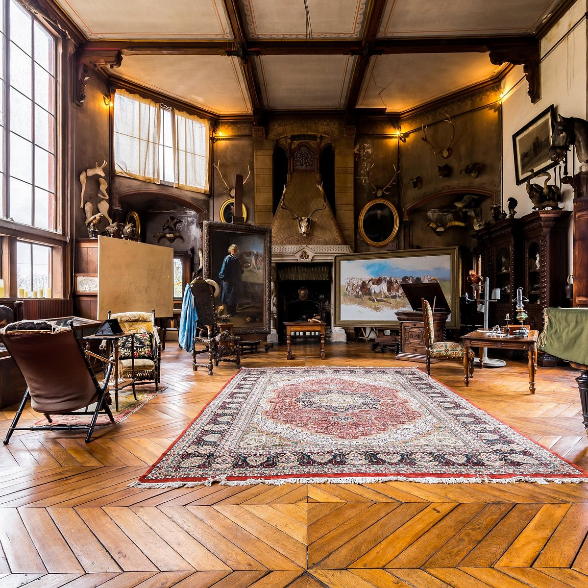

A propos de l'exposition
Un groupe de 6 étudiants en deuxième année du BUT Métiers du Multimédia et de l’Internet avait pour projet la création d'une exposition virtuelle. Mais il ne s'agissait pas seulement de la concevoir ; il fallait également assurer une communication efficace. Ainsi, 3 élèves du parcours développement web se sont associés à 3 étudiants du parcours création numérique. Cette collaboration a donné naissance à une agence de communication fictive nommée Kléio, spécialisée dans la mise en valeur des femmes artistes. Parallèlement, elle a permis la réalisation de l'exposition virtuelle interactive intitulée "À travers leurs regards", mettant en lumière les œuvres de Rosa Bonheur, célèbre peintre du 19e siècle.
Pour la réalisation de cette exposition interactive, notre principal objectif était d'aider un large public à en apprendre davantage sur une personnalité aussi exceptionnelle et singulière que Rosa Bonheur. Après avoir visité son château à Thomery, nous avons décidé que la meilleure façon de la présenter serait de recréer son atelier. Certains objets nous ont semblé particulièrement intéressants, c'est pourquoi nous avons ajouté de petites histoires qui détaillent sa personnalité.
L'objectif principal de notre exposition était de souligner comment Rosa Bonheur représentait l'art des animaux sur ses toiles. C'est le regard des animaux qui distingue ses peintures, nous permettant de voir de véritables lions, chiens, renards, vaches et bien d'autres de ses animaux. Afin de mettre en valeur le réalisme de ce regard et émotions qu'éprouve ces animaux, nous avons décidé de placer à côté des tableaux de véritables photographies, ainsi que des études de Rosa, qui permettent de voir à quel point elle était méticuleuse dans la préparation de son travail, en détaillant chaque muscle.
Cette exposition a été créée avec la technologie ThreeJs. Pour toutes vos questions et suggestions, vous pouvez contacter la développeuse de l'exposition, Daria Iarovaia, à l'adresse iarovaiadaria@gmail.com. Nous remercions très chaleureusement Emilian Kasemi, grâce à la vidéo explicative de qui ce projet est devenu possible.
